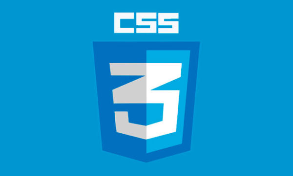

Después de HTML5, CSS3 es el segundo lenguaje que deberías aprender si piensas dedicarte al diseño y desarrollo web. Aunque HTML5 sirve para definir la estructura, CSS3 te permite darle un aspecto único a tu sitio. Al finalizar de leer este artículo no te quedará duda alguna sobre el por qué debes aprender CSS3.
CSS significa Cascade Style Sheets, también llamado Hojas de Estilo en Cascada. CSS es un lenguaje de marcado que se emplea para dar formato a un sitio web. Es decir, funciona en conjunto con los archivos HTML. Por esta razón, para crear un sitio web debes saber tanto HTML como CSS.
Cabe agregar que el lenguaje CSS3 se puede aplicar en la misma hoja en la que estás desarrollando un documento HTML, pero por motivos de productividad se suele realizar en un documento aparte con la extensión .css. Este documento se puede vincular a cada página HTML que conforme el sitio web, es por ello que es más útil realizar los estilos por separado.
Como ya mencionamos, CSS3 sirve para cambiar el aspecto de un sitio web, desde las medidas para los márgenes hasta las especificaciones para las imágenes y el texto. CSS3 funciona mediante módulos, algunos de los más comunes son “colors”, “fonts”, “backgrounds”, etc. Los módulos son sólo categorías en las que se pueden dividir las modificaciones que hacemos al aspecto de nuestro sitio web. Existen un gran variedad de módulos, pero mencionaremos algunos de los más útiles y que añaden mayor interactividad a un sitio:
Probablemente una de los mayores logros de CSS3 es que ofrece la posibilidad de añadir animaciones y transiciones. Gracias a las transiciones puedes cambiar la apariencia y el comportamiento de un elemento cada vez que se da un cambio de estado (por ejemplo, cuando el cursor se posa sobre dicho elemento). Por otro lado, las animaciones permiten que tanto la apariencia como el comportamiento de un elemento se altere en base a fotogramas.
De esta manera, puedes añadir mayor interactividad a tu sitio sin recurrir a JavaScript o Flash, sólo con el poder de CSS3.
Todas las páginas web trabajan con columnas. De hecho, muchos diseños se hacen en base a una cuadrícula y como mínimo se emplean dos columnas. En el caso de layout tipo revista, el número de columnas suele ser mayor. Sin importar el número de columnas bajo el cual decidas organizar tu sitio, puedes crear un layout con diversas columnas gracias a la propiedad “Multicolumn Layout” de CSS3. Esta propiedad no sólo te permite especificar el número de columnas de tu layout, sino también el ancho de cada columna.
CSS3 no sólo te permite modificar el color de los elementos que conforman tu página, sino que también te permite crear gradientes. Anteriormente, esto no era posible y tenías que emplear imágenes, pero ahora que puedes hacerlo desde el mismo archivo CSS. De esta manera, mejorar el tiempo de respuesta de tu sitio.
Puedes crear gradientes lineales especificando la dirección o añadiendo un ángulo bajo el cuál se creará la gradiente. Puedes elegir de dos a más colores para tus gradientes e incluso añadirle transparencia, de modo que a nivel creativo realmente no hay límites al momento de crear tus gradientes CSS3.
La propiedad “Transform” de CSS3 no sólo te permite rotar elementos, sino también cambiar su tamaño y moverlos. Esta transformación puede ser aplicada a imágenes, botones y cualquier otro elemento 2D. También te permite realizar animaciones en base a la rotación de elementos, de modo que puedes hacer girar un elemento como un péndulo o de la forma que desees.
“Transform” también te permite realizar modificaciones a elementos 3D, puedes girarlos o cambiar su tamaño, es decir, puedes aplicar las mismas modificaciones tanto en 3D como en 2D, obviamente los resultados varían.
Debido a la popularidad del minimalismo y el diseño flat, los objetos 3D ya no son tan comunes, sin embargo, un uso común de “Transform” en elementos 3D es en galerías.
Probablemente una de las más grandes adiciones de CSS es el poder para poder añadir fuentes desde librerías como Google Fonts. En esta librería tienes a tu disposición un gran número de fuentes gratuitas que puedes colocar en tu archivo CSS sin mayores problemas. Si la tipografía que has elegido tiene diversos formatos como cursivas, semi-cursivas, negritas, etc. puedes también darle formato a las fuentes y especificar su tamaño.
Esto permite que el diseño se encuentre más unificado, es decir, que los elementos gráficos y la tipografía se complementen y formen parte de una misma línea gráfica. A nivel de marca, es una gran adición poder añadir fuentes diferentes en tu página. Por otro lado, debido a que utilices una librería que se encuentra en la nube todo el tiempo, no dependes de las fuentes instaladas en el sistema del usuario.
Al igual que HTML, no necesitas de ningún software costoso para empezar a codificar en CSS. Lo que sí necesitas es un amplio conocimiento del idioma si estás pensando en realizar tu código CSS en un bloc de notas. Aunque es posible, realmente no lo recomendamos pues no te permite distinguir tus etiquetas de tu contenido y si estás empleando muchos estilos distintos, entonces es mucho más complicado hallar errores.
Si estás buscando una alternativa gratuita, te recomendamos usar Notepad++, editor de código que puedes descargar sin costo alguno y con el que podrás diferenciar y ordenar tu código de manera más sencilla.
Esta es probablemente la mayor ventaja del lenguaje CSS, pues te permite vincular un solo archivo CSS a diversas páginas. De modo que puedes definir todos los estilos de un sitio web y vincularlos mediante las etiquetas respectivas según corresponda.
Si en algún punto deseas cambiar algún estilo que se repite en todas las páginas, sólo debes abrir el archivo CSS, realizar el cambio que desees y listo. Este cambio será visible en todas las páginas sin que tengas que realizar ninguna otra acción.
No sólo puede mejorar tu productividad sino que ayuda a mejorar el tiempo de respuesta de tu sitio. Ya que todos los estilos se encuentran en un solo archivo CSS, evita que tengas que repetir código en los archivos HTML. Esta repetición no sólo te quita tiempo valioso, sino que también genera mayor peso en tus páginas. El cambio tal vez no podría ser demasiado si cuenta con3 o 4 páginas, pero si es un sitio con un mayor número de páginas sí que podría afectar tu tiempo de respuesta.
Además, esta hoja de estilos se mantiene en la caché del navegador de modo que cuando un usuario visita otra página de tu sitio, evita que el archivo CSS se cargue nuevamente, simplemente emplea la copia en la caché y de este modo se mejora el tiempo de respuesta de tu sitio.